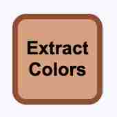
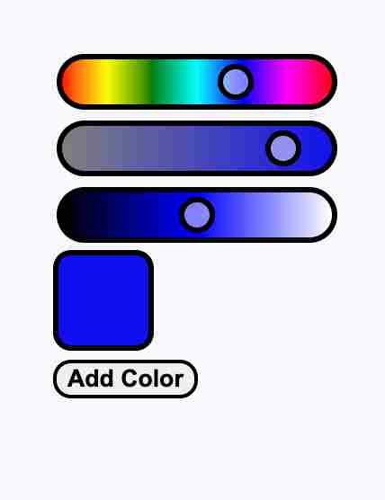
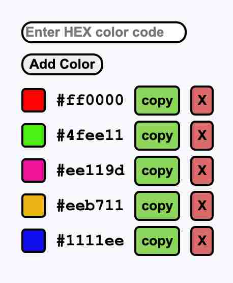

artx works with hex color codes this is because it is short it is the standard for websites and graphic design and it is super accurate the color picker is in hls this is because it is the most clear to use
With extract colors you can put all the colors you used in your code in your color list
the color piker is in HLS which means that the first slider is Hue, the second is Saturation and the third is Lightness. Once you have moved the sliders and you are happy with the color you can click the add color button to convert it to a hex code and add it to your color list
a list to keep all your color codes in one place you can add, remove and copy colors
